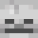
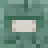

Raccogli un campione
Avvicinati a un mob in Minecraft e usa una siringa per raccogliere un campione.
Minecraft Java Edition · Accesso anticipato 0.2.1
Costruisci un laboratorio, studia 12 ceppi e acquisisci le abilità e le debolezze delle creature di Minecraft.

Gioco
Avvicinati a un mob in Minecraft e usa una siringa per raccogliere un campione.
Usa il sequenziatore per sbloccare sieri più forti. Premi G per aprire l'albero dei geni.
Processalo nella centrifuga per ottenere un genoma purificato.
Combina un genoma, una base mutagena e un catalizzatore nel sintetizzatore.
Trasformazione
Appare il primo tratto passivo.
Macchie del mob sparse sulla tua pelle.
Il tuo corpo inizia a cambiare forma.
I ceppi volanti prendono il volo. Le forme senza maniglie perdono la mano secondaria.
Prendi la forma del mob. Il cambiamento smette di decadere.
Tra una dose e l’altra la trasformazione può regredire. In forma completa, usa il siero di inversione per tornare indietro.
Catalogo dei ceppi
Apri la scheda di un ceppo per vederne le caratteristiche.
Forza Si rigenera al buio
Debolezza Brucia alla luce del sole

ScheletroForza Le frecce colpiscono più forte
Debolezza Ossa fragili
Robustezza I creeper non ti sibilano più contro
Debolezza Va nel panico vicino ai gatti
Forza Si arrampica sui muri: spingiti contro uno per salire, accovacciati per restare appeso
Debolezza Vulnerabile al fuoco
Forza Gambe lunghe scavalcano blocchi interi
Debolezza L'acqua e la pioggia bruciano come acido
Forza Branchie: respira sott'acqua
Debolezza Goffo sulla terraferma
Forza Vola: doppio salto. Il volo consuma fame; pioggia e acqua ti fanno atterrare
Debolezza Acqua e pioggia spengono la fiamma, e fanno male
Forza Vola: doppio salto. Il volo consuma fame; pioggia e acqua ti fanno atterrare
Debolezza Brucia alla luce del sole
Forza Polline: colture e arboscelli vicini crescono più in fretta
Debolezza Vive di dolcezza: miele, bacche, frutta
Forza Corre come un lupo
Debolezza Mangia solo carne
Forza I piglin ti considerano uno di loro, oro o non oro
Debolezza Avidità d'oro: non getta via nulla di dorato

GuardianoForza Corpo acquatico: nuoto rapido e galleggiante, branchie e vista chiara sott'acqua
Debolezza Respira solo in acqua; sulla terra l'aria si esaurisce e la vista si offusca
Minecraft 1.21.1
Registro delle modifiche 0.2.1 · Tutte le versioni e i registri delle modifiche
mods del profilo. In multigiocatore, server e giocatori devono usare la stessa versione di Mutagen.Pehkui è facoltativo e gestisce le dimensioni del corpo.